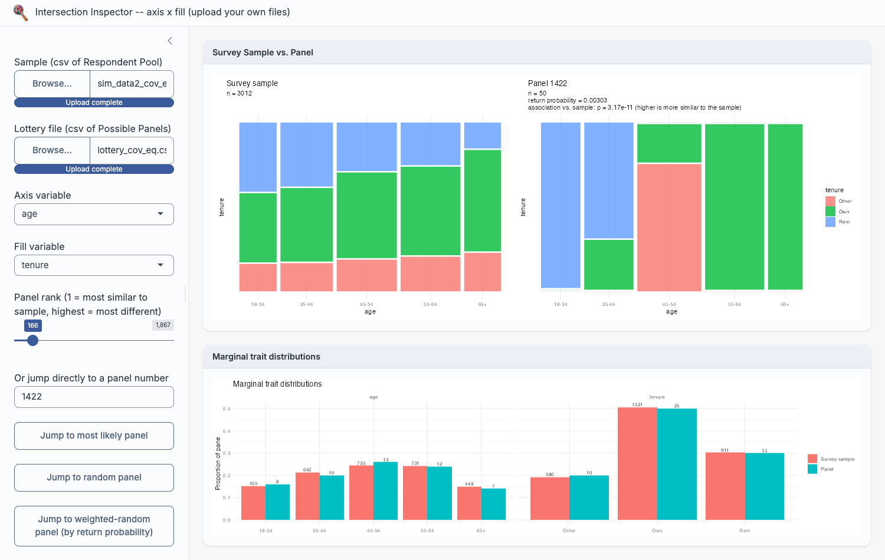
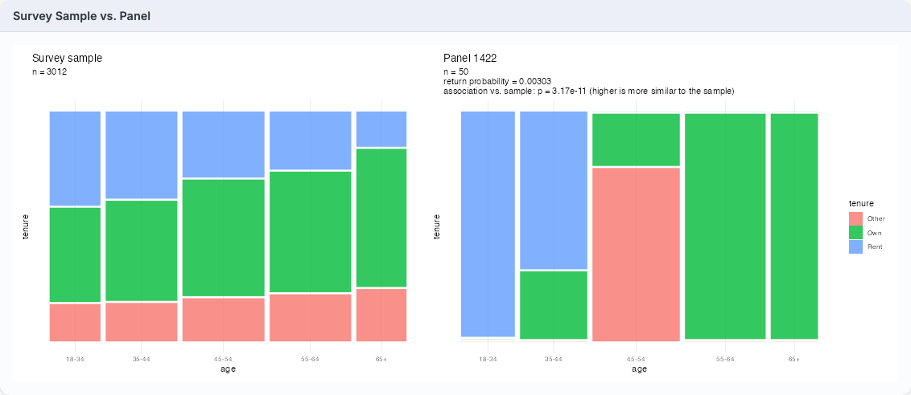
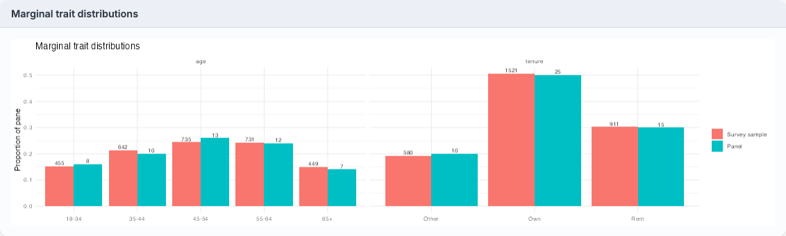

5 Introducing Intersection Inspector
Having flagged the issues with current sortition methods and process, the second gap this thesis set out to address was the absence of a tool for practitioners to assess the viability and intersectionality of panels before deliberation begins. To that end, a Shiny app was developed. Even in current practice, the LexiMin lottery and panel selection process takes two steps: uploading categories, trait quotas and a respondent pool with the desired panel size, then taking the resulting lottery to a separate interactive page for random number generation to select a specific panel. This thesis’s app replaces that second step, with added functionality that smooths a practitioner’s workflow and gives them more confidence in a panel’s representativeness at a controllably granular level of intersectionality – enabling more informed decisions about quota adjustments and representative validity, and reducing the likelihood of unexpectedly poor intersectional spread when panels convene.
5.1 Context: prior steps in the sortition pipeline
Intersection Inspector is not intended to replace the sortition process as a whole, only its final step. By the time a practitioner opens the app, they are assumed to have already carried out the preceding stages of a sortition: recruiting and surveying a respondent pool, specifying the category variables and trait quotas the panel should satisfy (e.g. minimum and maximum counts per age bracket, per tenure category), and running a selection algorithm over that pool to discover every panel of the desired size that satisfies those quotas. In current practice this selection step is performed by LexiMin, through an app hosted at Panelot.org, which outputs a lottery file enumerating each feasible panel together with its probability of being returned.
The app takes this lottery file and the underlying respondent pool as given, and does not re-run or second-guess the algorithm that produced them. Its usefulness is therefore not tied to LexiMin specifically: any sortition algorithm or process producing an equivalent output – a set of feasible panels (or a single panel) drawn from a known respondent pool, satisfying some quota specification – could be inspected through the app the same way. The quota-based selection step and the intersectional evaluation step addressed here are conceptually separate, and the latter is agnostic to which algorithm performed the former.
5.2 Intended workflow
The app page consists of three parts: 1. a sidebar comprised of interactable buttons, toggles and sliders, 2. a window that displays mosaic plots comparing the 2-way intersections and associations present between the sample and any selected panel for any two selected category variables, and 3. a window that displays the relative proportions of every trait present in the sample and any selected panel, across all categories present within the sample’s dataset. Figure 5.1 shows all three parts together, using the associated population’s equal-chance lottery (lottery_cov_eq.csv) – the same example used for Figure 4.6 in Chapter 4 – as the uploaded sample and lottery file. To make use of this, a practitioner is expected to follow the below procedure.

lottery_cov_eq.csv) used in Figure 4.6.
Uploading files
Intersection Inspector takes two files as input: a lottery file (Panelot’s lottery.csv, enumerating every panel the sortition algorithm found feasible, each with its member IDs and return probability) and the sample file the lottery was drawn from (the respondent pool that was invited and agreed to participate). From these two files alone, the app reconstructs every selected panel’s composition on each category present in the sample and makes its intersectional structure directly inspectable, without the practitioner writing any code or leaving the browser.
Required file structure
Because the app is designed to work with any sortition process producing an equivalent output, not just this thesis’s own simulation (Chapter 5), it does not hard-code column names or category domains. Instead, it expects each uploaded file to follow a general structure – the same structure Panelot itself produces, and the one this thesis’s own simulated data (Chapter 3) is written out in.
The sample file (the respondent pool, or survey sample, a lottery was drawn from) should hold one row per respondent, with:
- an optional ID column, detected case-insensitively by header name (
pool_member_identifier,id,member_id,respondent_id, oridentifier); if none of these is found, respondents are instead identified by row number, and lottery member IDs are matched against row position; - two or more further columns, each treated as a single categorical trait (e.g. age bracket, tenure, gender, region). Values in these columns are coerced to character and sorted alphabetically to form each trait’s factor levels, since the app has no way to infer a meaningful domain-specific order (e.g. “18-34” before “35-44”) for an arbitrary uploaded variable.
For example, this thesis’s own sim_data2_cov_eq.csv begins:
"pool_member_identifier","age","tenure"
33,"18-34","Rent"
67,"18-34","Rent"The lottery file (Panelot’s lottery.csv, or equivalent) should hold one row per possible panel, with:
- a “return probability of panel” column (if applicable), giving the probability panel j would be returned were the lottery run – optional for the mosaic plots and association tests, but required for the weighted-random panel button;
- one “panel member 1”, “panel member 2”, … column per selected panel member, each holding that member’s ID, matched against the sample file’s ID column (or row number, if no ID column was detected).
Correspondingly, lottery_cov_eq.csv begins:
return probability of panel,panel member 1,panel member 2,panel member 3,...
0.000890,4957,4961,4964,4966,5017,...
0.001015,6132,6166,6181,6239,6284,...Every trait column in the sample file, not just the two currently selected for the mosaic plot, appears in the marginal bar chart described below (Figure 5.3) – so a practitioner can switch which two variables the mosaic plots compare without re-uploading anything.
Comparing intersections and marginal proportions
Once the files are uploaded, the practitioner selects any two category variables of interest (e.g. age and tenure) and the app renders a pair of mosaic plots side by side: one for the currently selected panel, one for the sample it was drawn from. These mosaic plots visualise the two-way intersection and association between the chosen variables, so that a practitioner can see at a glance whether the panel’s joint distribution of traits resembles the sample’s “shape”, or whether it is skewed in a way that marginal quota counts alone would not reveal. Figure 5.2 shows this comparison for the same most-likely panel examined manually in Figure 4.6 – the app reproduces that same blocky, uneven age-tenure structure directly, alongside the panel’s association test p-value, without requiring any code. Beneath the mosaic plots, a second window displays bar charts of every trait’s marginal proportion in the panel against the sample, across every category in the dataset, covering representativeness at the single-variable level as well.

lottery_cov_eq.csv against its survey sample – the same panel and sample compared manually in Figure 4.6.
Figure 5.3 shows the accompanying “Marginal trait distributions” view for the same panel and sample: every age bracket and tenure category side by side, with counts labelled directly on each bar. Where the mosaic plots above expose the panel’s distorted joint structure, this view confirms the panel’s single-variable marginals stay close to the sample’s throughout – precisely the gap between marginal and intersectional representativeness this thesis is concerned with (Section 4.1).

lottery_cov_eq.csv used in Figure 5.2.
Testing and browsing panels
Beyond visual inspection, the app formally tests association preservation for each panel using the tests described in Chapter 4, summarising each as a p-value and significance interpretation (“level of difference” from the sample), alongside the panel’s size and its probability of selection by the lottery. Panels can be browsed in several ways: sliding across all discovered panels ordered from most to least similar in association to the sample, jumping to a uniformly random panel (for arbitrary evaluation of the algorithm’s performance), jumping to a probability-weighted random panel (sidestepping the need for a separate external random number generator once a panel is to be finalised), or entering a specific panel ID directly. A further view lets the practitioner check, at an adjustable representation threshold, which intersections are missing or under-represented in the panel relative to the sample. Once a panel is chosen, its member IDs can be inspected and copied to the clipboard to continue the existing workflow (e.g. contacting selected members). Figure 5.4 shows the full set of sidebar controls behind this workflow, from file upload and variable selection down to panel navigation, member ID lookup, and the under-representation threshold slider.
Replacing the Panelot.org selection step
In current practice, after a lottery file is generated, a practitioner takes it to a second, separate interactive page – on Panelot.org – purely to generate a random number and select one specific panel from those enumerated, then manually looks up the member IDs from the output. That step reveals nothing about which panel is being selected or how representative it is beyond the quota constraints already satisfied; it is, in effect, a black box that turns a lottery file into a single panel. Intersection Inspector is designed as a drop-in replacement: it accepts the same lottery and sample files, supports the same random (and probability-weighted random) selection as a final action, and returns the same member list a practitioner needs – while additionally providing the mosaic plots, marginal bar charts, association p-values, and under-representation checks along the way.
Benefits for new practitioners
This is particularly intended to benefit practitioners who are new to sortition or without a statistics background. Rather than trusting that satisfied quota constraints automatically mean a representative panel, or treating selection as an opaque final step, the practitioner is given an interpretable visual and numerical basis for that trust – or for flagging concern – before a panel is convened. Because panels can be scrolled through and compared on their association preservation, a practitioner can also use the app diagnostically: if every available panel shows a similarly poor association to the sample, that points to the quota constraints themselves needing revision, rather than to any single unlucky draw. It also gives the practitioner a chance to decide whether particular intersections need to be captured for their engagement context, and whether additional surveying may be necessary for a more representative sample. If the practitioner has access to the slice data, they can format it to match the expected survey-respondent structure and compare the panel against that directly, for a comparison closer to the population. In this way, the app turns a previously invisible step of the sortition pipeline into a transparent, inspectable one, directly in the hands of the people already running it.
A two-variable limitation
The mosaic plots and association tests described above operate on exactly two category variables at a time, chosen from the sidebar’s axis and fill dropdowns (Figure 5.4) – unlike the marginal bar charts, which already display every trait column in the dataset at once (Figure 5.3). A dataset with more than two trait columns – age, tenure, gender, and region, say – cannot have its full joint, intersectional structure inspected in a single combined view; the practitioner instead sees two variables’ intersection at a time, switching the dropdowns to step through whichever pairs are of interest. This is a genuine constraint relative to the full joint distribution a panel’s representativeness ultimately depends on, and it is worth stating plainly rather than treating the app as a complete solution to the intersectionality gap this thesis has documented.
It is not, however, a strictly worse design than attempting to show every variable’s intersection at once. A single visualisation spanning four or more categorical variables simultaneously – the kind of display an UpSet plot or a fully faceted mosaic plot might attempt (Chapter 2) – trades a cleanly interpretable comparison for a much busier one, and a practitioner without a statistics background is the person least likely to benefit from that trade. Restricting the mosaic and association-test view to two variables at a time instead gives a practitioner deliberate, granular control over which specific intersection they inspect at any point – the “traits that matter” for a given engagement, rather than every combinatorial intersection a dataset happens to contain, most of which may be irrelevant to the community context at hand. Paired with the ability to switch which two variables are selected at will, this arguably hands the practitioner more usable control over intersectional inspection than a single all-variables-at-once view would, while reducing the risk of overwhelming a non-specialist user with a visualisation too dense to act on. The cost is that confirming a panel’s representativeness across every pairwise combination of traits requires stepping through each pair in turn, rather than seeing the full picture in one view – a trade-off between completeness and usability that future versions of the app could revisit, for instance by letting a practitioner flag a small number of trait combinations as particularly important and surfacing those automatically.
App functions:
- Takes a lottery file and sample file
- Generates mosaic plots to show intersections of categories within lottery and sample
- Generates bar charts of trait proportions to show the relative marginal presence of traits between the panel and sample
- Calculates the level of similarity of associations/general shape present within the sample and panels
- Orders the panels based on their level of similarity in association to the sample, by using the calculated p-values
- Displays size of sample and panel, as well as selection probability of each panel and their level of association preservation compared to sample (as p-value, with interpretation of “significance level of difference”)
- Allows the user to slide across these to compare as they worsen
- Allows the user to jump to a fully random panel, just to assess its level of representation
- Allows the user to input a specific panel ID, if they want to inspect it in particular
- Allows the user to jump to probability-weighted random panels (if probability exists within the lottery file), side-stepping the need for external RNG to select a panel
- Allows the user to inspect and copy panel member IDs to clipboard, to continue with workflow
- Allows the user to check missing and under-represented intersections (compared to sample) at different representation thresholds